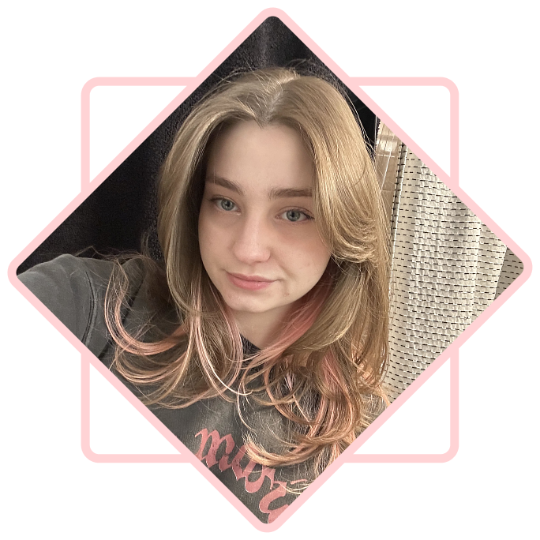

Boston Based UI + UX Developer
Hi! My name is Lucy and I'm a Technical UI Designer. I currently work for Autonodyne as a HMI Software Engineer in Unity - designing UI functionality and improving the UX across multiple applications.
I love making sure users have an interesting and enjoyable experience when interacting with my systems/games. I'm always looking for new opportunities in the game UI space!